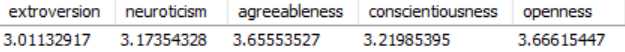
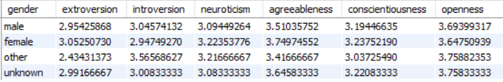
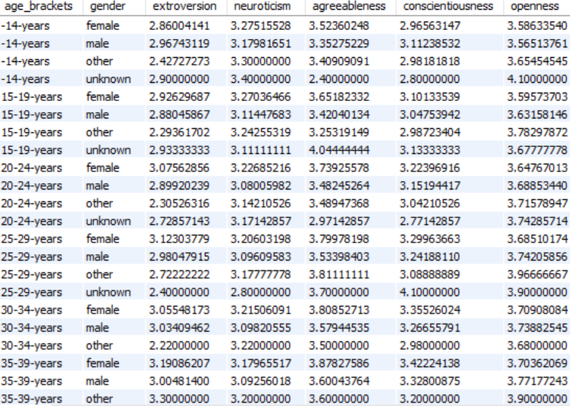
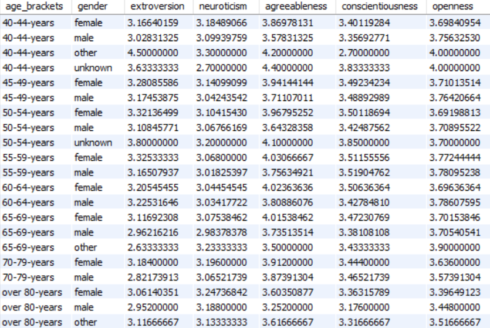

Tällä sivulla esittelen muutamia SQL-projektejani. Tämän hetken projektit ovat:
1. Koronatilastot. Tässä projektissa käyn läpi Suomen, Euroopan ja maailman korotilastoja. Taitoja, joita tässä projektissa opin olivat keskeisesti
- tarkasteleva analyysi
- Excel (datan siivoaminen)
- SQL (CTE, Join, ikkuna-ja aggregaatti-funktiot)
- MySQL
- Power Bi (datan visualisointi)
- Python (Pandas)
- Visual Studio Code
2. Big5-persoonallisuuspiirteiden tarkastelu. Aineiston suuruus kattaa noin reilu 19000 henkilöä vuodelta 2012, jotka tekivät big5-nettitestin.
Projektin oppimistavoite painottui- SQL-alakyselyiden harjoittelemiseen ja soveltamiseen
- CASE-lausekkeiden soveltamiseen muun muassa osana alakyselyitä
1. Koronatilastot
Projekti koostuu kolmesta eri alaprojektista:
- Suomen koronatilastot (Github-koodi täältä)
- Euroopan koronatilastot (Github-koodi täältä)
- Maailman koronatilastot (Github-koodi täältä)
Projektidokumentti rakentuu projektijohdannosta, jossa esitellään projektin lähtökohdat ja esittelee sen jälkeen kunkin projektin tulokset erikseen.
Kaikki projektin toteutuksessa käytetyt SQL-haut löytyvät Github-sivultani.
Projektin lähtökohtana oli tutkia SQL:n avulla Our World In Data -sivuston (Coronavirus Pandemic (COVID-19) - Our World in Data) tarjoamaa dataa (csv-tiedosto) koronasta vuosien 2020 (tammikuu) - 2023 (syyskuu) ajalta. Sivustolla on mahdollista tarkastella dataa maailmanlaajuisesti, tai rajata sitä maanosien tai halutun kohdemaan mukaan, joista voi myös ladata itselleen tiedoston. Kaikki sivuston tarjoama data käsittää sivuston mukaan muun muassa
1) tapaukset: Kuinka monta uutta tapausta vahvistetaan päivittäin? Kuinka monta tapausta on vahvistettu pandemian alusta lähtien? Miten tapausten määrä muuttuu?
2) Kuolemat: Kuinka monta COVID-19:ään liittyvää kuolemaa on raportoitu? Onko kuolemien määrä nouseva vai laskeva? Miten kuolleisuus vertautuu muihin maihin?
3) Rokotukset: Kuinka monta rokoteannosta annetaan päivittäin? Kuinka monta annosta on annettu yhteensä? Mikä osuus väestöstä on rokotettu?
4) Testaus: Kuinka paljon maat tekevät koronavirustestejä? Kuinka monta testiä maa tekee löytääkseen yhden COVID-19-tapauksen?
Projektin lähtökohtana oli tarkastella ensin maailmanlaajuisia tilastoja, joka kuitenkin laajeni kolmeksi eri alaprojektiksi. Maailman korona-datan lisäksi, käsittelen myös Suomen ja Euroopan korona-tilastoja. Tiedoston suuruuden takia (noin 344000 riviä) päätin tapauskohtaisesti lähtökohtaisesti rajata tiettyjä osa-alueita pois tarkastelusta ja keskittää analyysi kohtien 1-3 tarkasteluun.
Datan alustava muokkaaminen analyysia varten
Poistin ensin Excelissä lähdetiedostosta ylimääräisiä, analyysin kannalta tarpeettomia sarakkeita. Suodatin lisäksi Suomen ja Euroopan korona-analyysiä varten tiedostosta myös tarpeettomia rivejä (maita ja niihin liittyviä tietoja) pois. Lopuksi muokkasin tietosarakkeita oikeaan numeeriseen muotoon, kuten päivämääriä, tai tekstimuotoisia numeerista dataa sisältäviä sarakkeita. Koska kyseessä on SQL-projekti, jätin osan datan muokkauksesta sql-hakujen yhteyteen (null-arvojen huomiointi). Käytin analyysissa MySQL:ää, johon latasin muokatun CSV-tiedoston Pythonia käyttäen Visual Studio Codea. (Python-Tiedosto)
Alaprojekti 1: Suomen koronatilastoja
Suomen tilastoissa tuon esiin tapaukset, kuolemat, rokotukset, rokotetut ja miten niiden trendit kehittyivät 2020-2023 välisenä ajanjaksona. Lisäksi lisäsin analyysiin ja raporttiin mukaan vertailun vuoksi myös dataa pohjoismaiden tapauksista ja kuolemista ja niiden suhteellisista osuuksista. (SQL-haut Githubissa)

Tulokset:
1. Suomessa on 2020-2023 (syyskuu) välisenä aikana virallisia tartuntoja noin 1,5 miljoonaa. Huippu tartunnoissa havaitaan vuoden 2022 aikana ja siirtyen edelleen 2023 puolelle. Luultavammin tämä johtuu höllentyneistä korona-rajoituksista.
2. Tartunnoista kuolemaan johti 10201 tapausta, jotka vastaavat 0,69% osuuttaa tapauksista ja 0,07% osuutta väestöstä. Kuolemien trendi seuraa tartuntahuippuja vuoden 2022-2023 aikana jakautuen alkuvuoden ja loppuvuoden 2022 huippuihin ja vuoden 2023 jo alhaisempiin kuolemiin.
3. Rokotettuja tilastojen mukaan olisi ollut 4,5 miljoonaa, joista täysin rokotettuja hivenen vähemmän, noin 4,3 miljoonaa. Suurin huippu rokotuksille on vuoden 2021 aikana jolloin rokotukset käynnistyivät.
4. Pohjoismaiden välisessä vertailussa Suomi sijoittuu kuolemien suhteellisen osuuden mukaan katsoen sijalle 2 Ruotsin jälkeen. Vaikka varsinaisia syitä tähän ei pysty varmaksi sanomaa tässä kohtaa, niin spekuloiden voi todeta ainakin maiden väkiluvun olevan yksi havaittavissa oleva tekijä.
Alaprojekti 2: Euroopan koronatilastot
Euroopan tilastoissa nostan esiin tapaukset, kuolemat, rokotukset, rokotetut ja miten niiden trendit kehittyivät 2020-2023 välisenä ajanjaksona. SQL-haut>

Tulokset Euroopan korona-analyysista:
1. Tapauksia esiintyi vuoden 2020-2023 aikavälillä noin 250 miljoonaa. Suurin huippu todetuissa tapauksissa sijoittuu vuoden 2022 ajalle, 156 miljoonaa.
2. Kuolemia Euroopassa on analyysin mukaan tilastoitu reilu 2 miljoonaa. Suurin osa näistä sijoittuu analyysin mukaan 2020-2021 ajalle. Suurimmat lukemat löytyvät Englannista (230 tuhatta), Ranskasta (168 tuhatta), Ukrainasta (109 tuhatta), Italiasta (191 tuhatta), Puolasta (119 tuhatta) ja Venäjältä (400 tuhatta). Vastaavasti esimerkiksi Suomessa kuolemat jäävät 10 200 kpl:ään. Kuolemien suhteellinen osuus väestöstä on analyysin mukaan Bulgariassa (0,57%, Bosnia-Herzegovinassa (0,51%) ja Unkarissa (0,47%).
3. Rokotuksia Euroopassa on annettu tilastojen mukaan 1,27 miljardia, mikä on paljon, mutta jos määrä suhteutetaan rokotettuihin, 577 miljoonaa, on luku jo lähellä uskottavaa. Tähän sisältyy myös oletus kahdesta buustista.
4. Rokotettujen ja täysin rokotettujen välinen ero vaikuttaisi pysyvän maittain, joskin tässä kohden eroa ei suhteellisesti tarkennetakaan.
Alaprojekti 3: Maailman koronatilastot
Maailman koronatilastoissa nostan esiin tapaukset, kuolemat, rokotukset, rokotetut ja miten niiden trendit kehittyivät 2020-2023 välisenä ajanjaksona.SQl-haut

Tuloksia maailman korona-analyysista:
1. Tapauksia maailmanlaajuisesti olisi syyskuuhun 2023 mennessä kerääntynyt 770 miljoonaa. Määrällisesti eniten tapaksia on Aasiassa, mikä johtuu selkeästi suuremmasta väestön määrästä. Toiseksi eniten Pohjois-Amerikassa ja edelleen Euroopassa.
2. Kaikkiaan koronakuolemia tilastoitiin maailmanlaajuisesti 6,96 miljoonaa. Kuolemien suhteelliset osuudet suhteessa väestöön ovat suurimmat Etelä-Amerikassa (1,36m / 0,15%), sen jälkeen Euroopassa(reilu 2m / 0,14%) ja Pohjois-Amerikassa(1,6m / 0,08%). Kuolemien huiput vaikuttaisivat ajoittuvan Euroopassa ja Pohjois-Amerikassa vuoden 2020 kevään puolelle ja etenkin vuoden 2021 alkuun. Vastaavasti Aasiassa ja Etelä-Amerikassa huippu kuolemissa saavutetaan vasta kevään ja kesän 2021 aikana.
3. Maailmanlaajuiset rokotusmäärät kipuavat 14 miljardiin. Rokotettujen määrä yltää 5,6 miljardiin, joista 5,1 miljardia on täysin rokotettuja. Rokotettujen määrä on korkein luonnollisesti Asiassa, jonka kohdalla nähdään myös huipukkuutta heinäkuun 2021 ja tammikuun 2022 aikana. Muiden maan osien määrät jäävät selvästi pienimmäksi absoluuttisia määriä katsoessa.
2. Big5-persoonallisuuspiirteiden tarkastelua
Projektin tarkoitus on tutkia Big5-aineistoa ja selvittää persoonallisuuspiirteiden jakautumista otoksessa (+19000 hlöä).
Projektin kaikki SQL-haut löytyvät GITHUB-sivustolta.
Aineisto on peräisin Kaggle-sivustolta. Otos on kerätty alunperin vuodelta 2012 netissä täytettävän big5-testin avulla, jonka pystyy tekemään käytännössä kuka tahansa. Kysymyksiä arvioitiin viisiportaisella likert-asteikolla, jossa 1=Eri mieltä, 3=Neutraali, 5=Samaa mieltä (0=jäänyt vastaamatta). Kaikki esitettiin yhdellä sivulla seuraavassa järjestyksessä: E1, N2, A1, C1, O1, E2.
Esimerkkejä ekstroversiota mittaavista kysymyksistä:
E1 Olen juhlien keskipiste.
E2 En puhu paljon.
E3 Tunnen oloni mukavaksi ihmisten seurassa.
E4 Pysyttelen taustalla.
E5 Aloitan keskusteluja.
E6 Minulla on vähän sanottavaa.
E7 Puhun monille eri ihmisille juhlissa.
E8 En pidä huomion keskipisteenä olemisesta.
E9 En pane pahakseni olla huomion keskipisteenä.
E10 Olen hiljainen tuntemattomien seurassa.
Seuraavalla sivulla kerättiin seuraavat tiedot: Ikä annettu tekstinä (engnat) (alle 13-vuotiaiden tietoja ei tallennettu). Sijainti ilmoitettu maatunnuksena. Sukupuoli valittu alasvetovalikosta. 1=Mies, 2=Nainen, 3=Muu (0=jäänyt vastaamatta)DEMOGRAFISET TAUSTATIEDOT
Sukupuolijakauma:
Jakauma on naisvoittoinen, noin 12000, miehiä noin 7600, muut noin 120.
SELECT
CASE when gender = 1 then 'male'
WHEN gender = 2 then 'female'
WHEN gender = 3 then 'other'
ELSE 'unknown'
END as gender, count(*)
FROM bigfive
GROUP BY gender;
Otoskoko maittain
Kärkimaat otoksessa ovat Yhdysvallat (8753 hlöä), Englanti (1531), Indonesia (1464), Australia (974) ja Canada(924). Loput maat kymmenen parhaan joukossa 200-600 hlön paikkeilla ja loput jäävät muutamiin kymmeniin.
SELECT country, count(*) as country_count
FROM bigfive
GROUP BY country;
PIIRTEIDEN TARKASTELUA AINEISTOSSA
Keskimääräiset luonteenpiirteiden pisteet
e1-e10: ekstroverio, n1-n10: neuroottisuus, a1-a10: sovinnollisuus, c1-c10: tunnollisuus, ja o1-o10:avoimuus uusille kokemuksille.
Alla lasketaan yhteen luonteenpiirteitä kuvaavat pisteet. Erotus johtuu haluttua luonteenpiirrettä negatiivisesti peilaavasta kysymyksen asettelusta (eli sellaisenaan pisteytys mittaa vastakohtaa), joten tästä johtuen vähennetään täysistä pisteistä annettu vastauspistemäärä.
Tulosjakauma painottuu selkeästi avoimuuden ja sovinnollisuuden hyväksi: 
AVG((e1+(6-e2)+e3+(6-e4)+e5+(6-e6)+e7+(6-e8)+e9+(6-e10))/10) as extroversion,
AVG((n1+(6-n2)+n3+(6-n4)+n5+(6-n6)+n7+(6-n8)+n9+(6-n10))/10) as neuroticism,
AVG((a1+(6-a2)+a3+(6-a4)+a5+(6-a6)+a7+(6-a8)+a9+(6-a10))/10) as agreeableness,
AVG((c1+(6-c2)+c3+(6-c4)+c5+(6-c6)+c7+(6-c8)+c9+(6-c10))/10) as conscientiousness,
AVG((o1+(6-o2)+o3+(6-o4)+o5+(6-o6)+o7+(6-o8)+o9+(6-o10))/10) as openness
FROM bigfive;
Ikäryhmät ja sukupuolijakauma
Tutkittaessa sukupuolijakauman kautta, havaitaan, naisten olevan miehiä neuroottisempia, sovinnollisempia, tunnollisempia ja ekstrovertimpia. Vastaavasti miehet ovat naisia avoimempia, introvertimpia ja selvästi vähemmän sovinnollisempia. Mielenkiintoista on, että sukupuolen ollessa "muu", introversiossa ja avoimuudessa näkyy selvä piikki, joka on ilmoitettuja miehiä ja naisia suurempaa, ja vastaavasti ekstroversio ja tunnollisuus huomattavasti alhaisempaa. Neuroottisuus pysyy naisten tasolla.
Alla on SQL-haku, jossa yhdistetään sukupuoli ikäryhmiin. Tulosten mukaan piirteissä näkyy vaihtelua ikäryhmien välillä. Yleisesti neuroottisuus laskee iän myötä, etenkin naisilla. Myös sovinnollisuus ja tunnollisuus korostuvat yleisesti.
Ikäluokat sukupuolittain:
 SELECT
age_brackets, gender,
AVG((e1+(6-e2)+e3+(6-e4)+e5+(6-e6)+e7+(6-e8)+e9+(6-e10))/10) as extroversion,
AVG((n1+(6-n2)+n3+(6-n4)+n5+(6-n6)+n7+(6-n8)+n9+(6-n10))/10) as neuroticism,
AVG((a1+(6-a2)+a3+(6-a4)+a5+(6-a6)+a7+(6-a8)+a9+(6-a10))/10) as agreeableness,
AVG((c1+(6-c2)+c3+(6-c4)+c5+(6-c6)+c7+(6-c8)+c9+(6-c10))/10) as conscientiousness,
AVG((o1+(6-o2)+o3+(6-o4)+o5+(6-o6)+o7+(6-o8)+o9+(6-o10))/10) as openness
FROM (
SELECT
CASE
WHEN age <= 14 THEN '-14-years'
WHEN age >= 15 AND age <= 19 THEN '15-19-years'
WHEN age >=20 AND age <=24 THEN '20-24-years'
WHEN age >=25 AND age <=29 THEN '25-29-years'
WHEN age >=30 AND age <=34 THEN '30-34-years'
WHEN age >=35 AND age <=39 THEN '35-39-years'
WHEN age >=40 AND age <=44 THEN '40-44-years'
WHEN age >=45 AND age <=49 THEN '45-49-years'
WHEN age >=50 AND age <=54 THEN '50-54-years'
WHEN age >=55 AND age <=59 THEN '55-59-years'
WHEN age >=60 AND age <=64 THEN '60-64-years'
WHEN age >=65 AND age <=69 THEN '65-69-years'
WHEN age >=70 AND age <=79 THEN '70-79-years'
ELSE 'over 80-years'
END AS age_brackets,
CASE when gender = 1 then 'male'
WHEN gender = 2 then 'female'
WHEN gender = 3 then 'other'
ELSE 'unknown'
END as gender,
e1, e2, e3, e4, e5, e6, e7, e8, e9, e10,
n1, n2, n3, n4, n5, n6, n7, n8, n9, n10,
a1, a2, a3, a4, a5, a6, a7, a8, a9, a10,
c1, c2, c3, c4, c5, c6, c7, c8, c9, c10,
o1, o2, o3, o4, o5, o6, o7, o8, o9, o10
FROM bigfive
) AS bf
GROUP BY age_brackets, gender
ORDER BY age_brackets ASC;